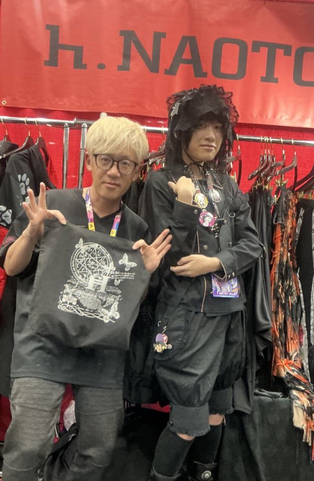
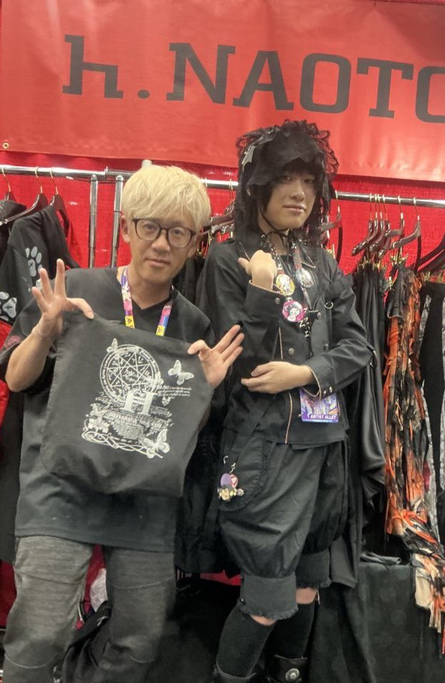

2025_07_20-2: Delta H Con AFTR-THRASH
You should always go to the events that make you forget to take pictures. Even if I took any Delta H's artist alley is always held in this ballroom venue that creates a "green stink aura" tint upon capture LOL. My only eyeroller is probably the rave that bombs every year because the entire set is always just anime OST back-to-back. Otherwise I only have fond experiences at Delta H.
Strangely I was well-received. I hopped like, 5 different attendee/cosplay masses (many of which I met that weekend) and on the last day a piece of the con adopted me and they brought me to Chinatown (for some reason I always end up there.) I couldn't stop swiveling my head when people approached me. I thought I was gonna lose my breath haha.
After retreating to Dim Sum, we knocked out every UFO catcher arcade in the outlet. I didn't expect to get lucky with the crane but I won a nice handful of dolls.

I didn't cosplay at all. Instead I took ragdoll Norton Campbell out for the entire weekend trip. Of course I matched my lanyard with him.
I finished off Delta H Con's final festivities off a mini photoshoot. After raiding the cranes we passed around the shopping cart (call that a cart rotation).
Cutsew: Sex Pot Revenge
Pants: Jack Rose
Jewelry: Vivienne Westwood, H.Naoto
Shoes: New Rocks
 
